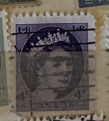
| SOURCE | TITLE| IMAGE MATCH | click to source page |
| www.ebay.com | Great Britain Queen Elizabeth II 1952 4D Postage Stamp ... | 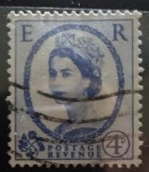 |
| www.mysticstamp.com | 359a - 1959 Great Britain - Mystic Stamp Company | 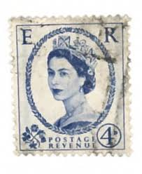 |
| www.ebay.com | Great Britain Queen Elizabeth II 1900's 4D ***RARE*** | eBay | 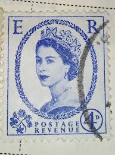 |
| www.etsy.com | Great Britain Queen Elizabeth II 1952 4d Postage Stamp off ... | 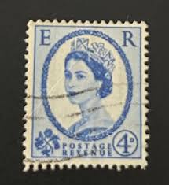 |
| www.reddit.com | I have so many stamps of the queen but curious about this ... | 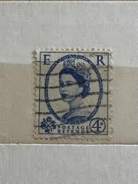 |
| www.ebay.com | 4d Stamp Queen Elizabeth II Portrait Blue Postage Revenue ... | 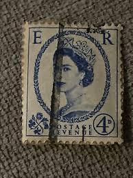 |
| www.etsy.com | Queen Elizabeth II Wilding Stamps, 4 X Unused Great Britain ... | 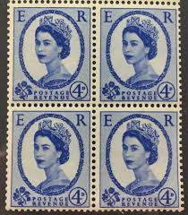 |
| www.ebid.net | Great Britain 1955 Queen Elizabeth II 4d Used Stamp. QE II ... | 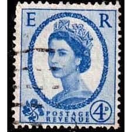 |
| www.facebook.com | Is this stamp worth keeping or not? | 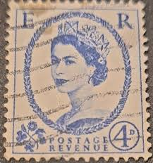 |
| www.mysticstamp.com | 358gp - 1960 Great Britain - Mystic Stamp Company | 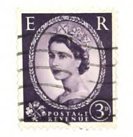 |
| www.facebook.com | Are Queen Elizabeth stamps worth anything? | 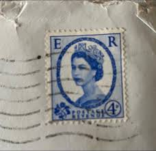 |
| www.ebay.com | RARE-Queen Elizabeth ER Postage Revenue 4D Stamp Rare White ... | 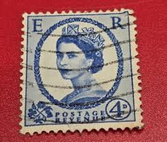 |
| www.gettyimages.com | Postage stamps from the series honouring Queen Elizabeth II ... | 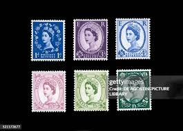 |
| worldstampsproject.org | Great Britain, Elizabeth II: Wilding Definitives, Varieties ... | 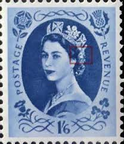 |
| www.alamy.com | Queen stamp blue hi-res stock photography and images - Page ... | 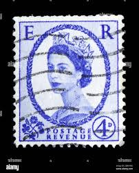 |
| www.pinterest.com | Rare King George VI and Queen Elizabeth II Stamps | 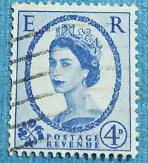 |
| www.etsy.com | Vintage ER Wilding Queen Elizabeth II 3cent Purple - Stamp ... | 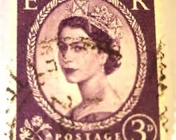 |
| www.youtube.com | Most Expensive UK Stamps - Queen Elizabeth II | 50 Great ... | 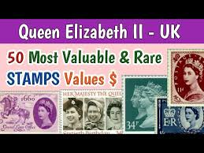 |
| postalmuseum.si.edu | Coronation Items | National Postal Museum | 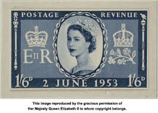 |
| www.dreamstime.com | Vintage Queen Elizabeth Postage Stamp Editorial Stock Photo ... | 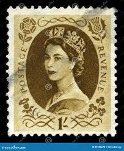 |
| www.linns.com | Variety of overprints found on British stamps | 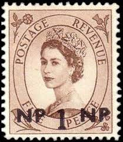 |
| www.instagram.com | ᴄᴇʏʟᴏɴ 🇱🇰- Qᴜᴇᴇɴ ᴇʟɪᴢᴀʙᴇᴛʜ ɪɪ ʀᴏʏᴀʟ ᴠɪꜱɪᴛ ... | 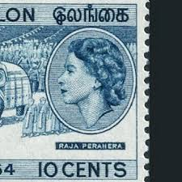 |
| www.shutterstock.com | United Kingdom Circa 1960 English Used Stock Photo ... | 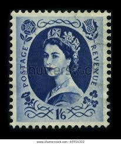 |
| govbooktalk.gpo.gov | GPO, FDR, and The Malta Citation | Government Book Talk | 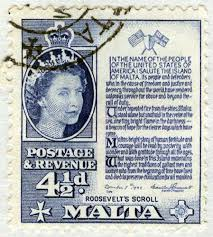 |
| www.hipstamp.com | Great Britain 298 Queen Elizabeth 1953 | Great Britain ... | 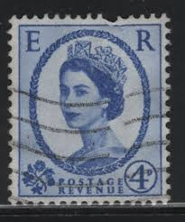 |
| www.ebay.com | 1965 Queen Elizabeth ER Postage Revenue 4D Stamp Rare ... | 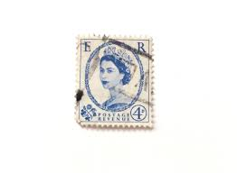 |
| www.pennphilatelics.com | 1953 QEII Wilding Definitive 4d block Builder Douglas IOM ... | 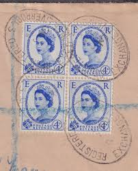 |
| www.cnn.com | Queen Elizabeth: How 70 years of portraits have made her an icon | 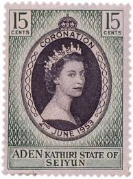 |
| worldstampsproject.org | Great Britain, Elizabeth II: Varieties of Commemorative ... | 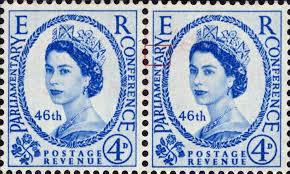 |
| www.alamy.com | Sheet of 1950's British Royal Mail1s 6d blue postage stamps ... | 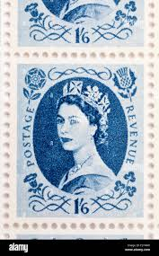 |
| commonwealthstamps.com | Stamps Omnibus Issues for 1953 Queen Elizabeth II Coronation | 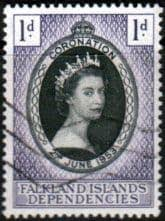 |
| www.mysticstamp.com | 306-08 - 1953 Great Britain, Queen Elizabeth II, Wilding ... | 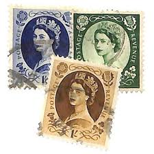 |
| www.etsy.com | Rare Vintage 1957 Queen Elizabeth II Stamp: Purple Wilding ... | 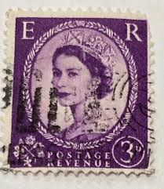 |
| www.bbc.com | The portrait of the Queen reproduced billions of times | 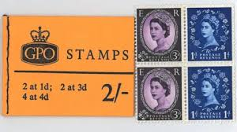 |
| www.worthpoint.com | Queen Elizabeth 11. 4d stamp very rare find colour error ... | 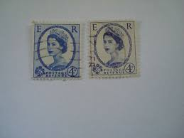 |
| www.facebook.com | How to distinguish between different wilding series stamps? | 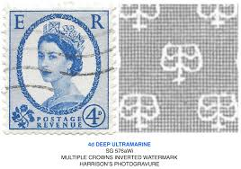 |
| ru.bidspirit.com | AW Auctions | Bidspirit - Auctions in Russia | 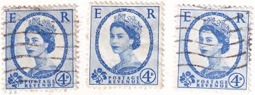 |
| stampbears.net | Pre-Decimal Stamps of New Zealand | Stamp Bears | 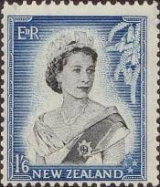 |
| findyourstampsvalue.com | Value of postage revenue queen elizabeth blue 4d stamps | 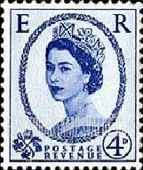 |
| www.youtube.com | Great Britain Wilding Stamps - YouTube |  |
| regalstamps.co.uk | 1965 Wilding 4d Double Impression Marginal Pair | 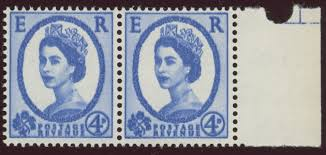 |
| www.kitantik.com | İngiltere Pulu - England Stamp - Mektup Zarfından Kesilmiş ... | 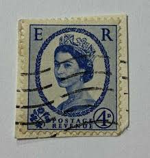 |
| www.postalmuseum.org | Elizabeth II Stamp Histories - The Postal Museum | 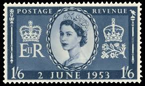 |
| www.thesquaremagazine.com | From The Editor – The Square Magazine | 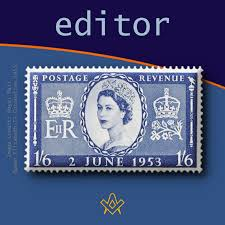 |
| www.gbstampsonline.co.uk | SG616ab 4d Dark Ultramarine 1960 Phosphor Issue 2 Bands ... | 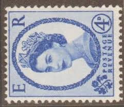 |
| www.theweek.in | A stamp of royal history | 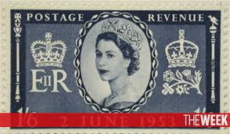 |
| www.gla.ac.uk | University of Glasgow - Explore - Her Majesty The Queen | 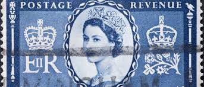 |
| www.flickr.com | stamp Canada 4 cent E R wilding 4c blue ER Queen Elizabeth ... | 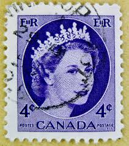 |
| www.british-stamps.com | British Stamps | Browse Stamps | Elizabeth II (Pre decimal ... | 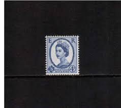 |
| www.ebay.com | 1965 Queen Elizabeth ER Postage Revenue 4D Stamp Rare White ... | 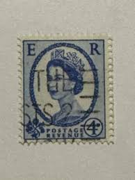 |
| www.ebid.net | GB Stamp SG 521 #298 used: 1952 4d Queen Elizabeth II ... | |
| www.youtube.com | Identifying and Collecting British Queen Elizabeth II Machin ... | |
| www.kenmorestamp.com | 1953 Queen Elizabeth Coronation - Complete Mint Omnibus ... | |
| www.arpinphilately.com | Buy Canada #405 - Queen Elizabeth II (1962) 5¢ | Arpin Philately | |
| www.reddit.com | Any real value in either of these two stamps ? : r ... | |
| colnect.com | Stamp: Queen Elizabeth II - 4d Wilding Portrait (United ... | |
| www.flickr.com | regional stamp GB 6d UK Great Britain postage revenue stam ... | |
| www.mysticstamp.com | 331-33 - 1955-56 Great Britain, Queen Elizabeth II, Wilding ... | |
| www.facebook.com | Total stamps in 1953 coronation omnibus? | |
| www.bobshop.co.za | England - 1955-1957 - UK - Block - 4P - Queen Elizabeth II ... |